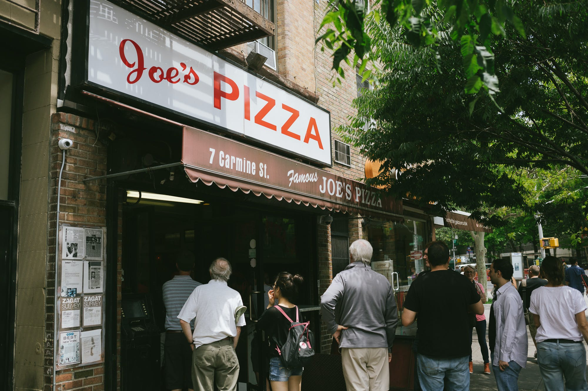

Des 5 quartiers de New York, Manhattan est celui qui possède la population la plus dense. Il est principalement constitué de l'île de Manhattan, délimitée par le fleuve Hudson, l'East River et la Harlem River. Faisant partie des plus grands centres économiques, financiers et culturels du monde, Manhattan est le cœur de la "Big Apple". Ses sites emblématiques incluent quelques gratte-ciel comme l'Empire State Building, Times Square et ses lumières éclatantes, et les théâtres de Broadway.
Central Park le plus célèbre
Pourquoi Central Park est célèbre ?
Depuis 1908, Central Park est apparu dans 240 films, l'élevant au rang de parc le plus filmé au monde. C'est également dans ce parc que le chanteur de country Garth Brooks s'est produit en 1997 devant un public de 980,000 fans, au terme de l'un des concerts les plus suivis au monde.
Quelle est l'histoire de Central Park ?
Le parc fut créé en 1857 suite à la volonté de la population qui souhaitait un espace vert dans la ville. En effet, au début des années 1800, New York est déjà une ville fortement peuplée avec environ 200 000 habitants en 1830. L'Etat décide alors de construire le parc sur un terrain en friche.
Quelle est la particularité de Central Park ?
Le parc comporte de nombreux espaces boisés, des lacs ainsi que des pelouses. On y trouve également de nombreux sites d'intérêt comme le « zoo de Central Park » et « The Mall », la promenade de Central Park. Il est entretenu par la ville de New York.
1600 lampadaires disséminés dans Central Park !! je vous dévoile le secret
Ce numéro a priori incompréhensible fonctionne en fait comme un véritable GPS : les deux ou trois premiers chiffres indiquent le numéro de la rue la plus proche, par exemple 83 pour la 83rd Street ou 104 pour le 104th Street. Vous pouvez alors savoir à quel niveau vous vous situez dans Manhattan et, surtout, savoir si vous marchez vers la sortie Nord, qui se trouve au niveau de la 110th Street ou vers la sortie Sud, au niveau de la 59th Street.
Les numéros suivants signalent quant à eux si vous vous trouvez plus proche de l’East Side ou plus proche du West Side : les nombres pairs indiquent le côté est de Manhattan alors que les nombres impairs désignent le côté ouest. Exemple avec le n°6136 en photo ci-dessus : vous n’êtes pas très loin de la 61st Street, dans l’Upper East Side.
Apres tous ces mystères et cette marche dans le magnifique central park que diriez vous si on mangeait un morceau ? Mais attention pas n'importe ou dans ce qui est à New-York une institution depuis maintenant 1975 Mesdames Messieurs JOE'S PIZZA !! Et oui la seule et l'unique la plus connue de manhattan la pizza de chez Joe's pizza. En 1975, Joe's Pizza a vu le jour sur Carmine Street, proche du Washington Square Park. Grâce à Joe Pozzuoli, originaire de Naples qui est venu partager l'art de la pizza à New York. Aujourd'hui, 5 restaurants sont désormais ouverts dans la ville.
Le Museum of Modern Art, connu sous l'acronyme MoMA, est un musée d'art moderne et contemporain inauguré en 1929 et aujourd'hui situé dans le quartier de Midtown à Manhattan, New York sur la 53e rue, entre les cinquième et sixième avenues.
Le MoMA fait partie des musées d'art moderne les plus importants et les plus influents dans le monde.
La collection du MoMA offre un aperçu de l'art moderne et contemporain, principalement européen et américain ; elle comprend des dessins, peintures, estampes, sculptures, photographies, des œuvres d'architecture et de design, des livres illustrés et livres d’artistes, des films et des médias électroniques.
La bibliothèque du MoMA comprend environ 300 000 livres et catalogues d'expositions, plus de 1 000 titres de périodiques et plus de 40 000 fichiers éphémères sur des artistes ou des mouvements.
Les archives contiennent des sources primaires liées à l'histoire de l'art moderne et contemporain.
- Voir la Statue de la Liberté et Ellis Island.
- Se rendre au Mémorial du 11-Septembre
- Grimper sur la plateforme du One World Observatory
- Monter au sommet de l'Empire State Building
- Top of The Rock
- Marcher le long de la High Line
- Se balader dans Central Park
- Metropolitan Museum of Art
Liste des choses à faire
Tableau de la population
| Année | Population | ||
|---|---|---|---|
| 1 | % de francais | 2022 | 5% |
| 2 | Population dominante | 2022 | Blancs et asiatique |
| 3 | Hause durant les 10 dernieres années | 2013/2023 | 1 438 582/1 530 783 |